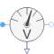
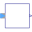

VoltageQuasiRMSSensorContinuous quasi voltage RMS sensor for polyphase system |

|
Diagram
{kind=link}
Information
This information is part of the Modelica Standard Library maintained by the Modelica Association.
This sensor determines the continuous quasi RMS
value of a polyphase voltage system, by averaging the phase RMS voltage phasors v.
V = sum({abs(v[k]) for k in 1:m})/m
See also
ReferenceSensor, FrequencySensor, PotentialSensor, VoltageSensor, VoltageQuasiRMSSensor, CurrentSensor, CurrentQuasiRMSSensor, PowerSensor, MultiSensor
Parameters (1)
| m |
Value: 3 Type: Integer Description: Number of phases |
|---|
Connectors (3)
| plug_p |
Type: PositivePlug Description: Positive quasi-static polyphase plug |
|
|---|---|---|
| plug_n |
Type: NegativePlug Description: Negative quasi-static polyphase plug |
|
| V |
Type: RealOutput Description: Continuous quasi average RMS of current |
Components (6)
| plugToPins_p |
Type: PlugToPins_p |
|
|---|---|---|
| plugToPins_n |
Type: PlugToPins_n |
|
| voltageSensor |
Type: VoltageSensor[m] |
|
|  | quasiRMS |
Type: QuasiRMS |
| v |
Type: ComplexVoltage[m] Description: Complex voltage |
|
| i |
Type: ComplexCurrent[m] Description: Complex current |
Used in Examples (4)
|
Modelica.Electrical.QuasiStatic.Polyphase.Examples |
|
|
Modelica.Magnetic.QuasiStatic.FundamentalWave.Examples.BasicMachines.SynchronousMachines Test example: PermanentMagnetSynchronousMachine fed by current source |
|
|
Modelica.Magnetic.QuasiStatic.FundamentalWave.Examples.BasicMachines.SynchronousMachines Test example: PermanentMagnetSynchronousMachine, investigating maximum torque per Amps |
|
|
Modelica.Magnetic.QuasiStatic.FundamentalWave.Examples.BasicMachines.SynchronousMachines Test example: Synchronous reluctance machine fed by current source |